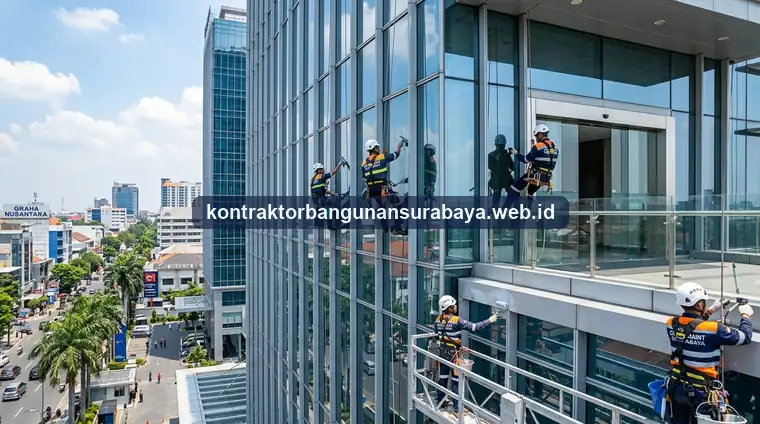

1. Apa Saja Cakupan Layanan Maintenance Bangunan Gedung?
Cakupan layanan maintenance bangunan gedung umumnya meliputi perawatan sistem AC, hidran dan proteksi kebakaran, panel listrik, hingga elemen sipil seperti dinding dan atap. kontraktorbangunansurabaya.web.id menawarkan layanan maintenance rutin bagi pemilik ruko dan gedung komersial di Surabaya yang ingin memastikan bangunannya tetap dalam kondisi optimal sepanjang tahun.
Pengelolaan gedung bertingkat di kawasan metropolitan Surabaya membutuhkan integrasi antara pemeliharaan preventif, korektif, dan berkala. Tanpa manajemen pemeliharaan terstruktur, fasilitas operasional dapat mengalami degradasi fungsi mendadak yang merugikan produktivitas bisnis para penyewa maupun pemilik gedung.
Tujuan Pokok Maintenance Rutin Terpadu
Memperpanjang usia pakai aset (life-cycle cost), menjamin keselamatan penghuni sesuai standar perizinan SLF, serta menjaga nilai jual dan sewa properti komersial di pasar Surabaya tetap tinggi.
2. Perjanjian Kerja Pemeliharaan AC, Hidran, dan Panel Listrik
Perjanjian kerja pemeliharaan (maintenance contract) biasanya mencakup frekuensi kunjungan rutin, misalnya bulanan atau triwulanan, lengkap dengan cakupan pekerjaan yang akan dilakukan pada setiap kunjungan, seperti pembersihan filter AC, pengecekan tekanan pada sistem hidran, dan pengujian panel listrik utama.
Kejelasan mengenai skema penanganan kerusakan mendadak di luar jadwal kunjungan rutin juga perlu dicantumkan dalam perjanjian, termasuk estimasi waktu respons yang dijanjikan, agar pemilik gedung memiliki kepastian layanan darurat apabila terjadi gangguan di luar jadwal pemeliharaan terjadwal pada gedung perkantoran modern.
| Sistem MEP Gedung | Cakupan Pekerjaan Kunjungan | SLA Waktu Respons Darurat | Kesiapan Suku Cadang |
|---|---|---|---|
| Tata Udara (HVAC/AC) | Cuci filter, ukur ampere kompresor, cek freon & drain | Maksimal 2 - 4 Jam | Kapasitor, sensor thermistor, kontaktor |
| Panel Listrik & Genset | Termografi sambungan kabel, uji MCB, pemanasan genset | Maksimal 1 - 2 Jam | Fuse, relay, aki genset, MCCB cadangan |
| Proteksi Kebakaran | Uji pompa jockey/diesel, tekanan pipa hidran, inspeksi APAR | Maksimal 1 - 2 Jam | Pressure gauge, valve, nozel hidran |
| Plumbing & Pompa Transfer | Cek otomatis radar pelampung, perapat seal pompa, drainase | Maksimal 2 - 4 Jam | Mechanical seal, klep tusen, float switch |
Ketersediaan suku cadang untuk komponen yang sering mengalami gangguan, seperti kapasitor AC atau saklar panel listrik, juga sebaiknya menjadi bagian dari kesiapan penyedia jasa maintenance, agar penanganan kerusakan tidak tertunda hanya karena menunggu pengadaan suku cadang dari luar.
3. Cakupan Perawatan Elemen Sipil dan Estetika Bangunan
Selain sistem MEP, layanan maintenance rutin juga mencakup elemen sipil seperti pengecekan kondisi cat eksterior, perbaikan kecil pada dinding atau lantai yang mulai rusak, serta perawatan taman atau area terbuka hijau apabila bangunan memiliki area tersebut.

Elemen Sipil & Struktur
- Dak Beton & Atap: Pemeriksaan retak dan proteksi waterproofing atap
- Dinding & Cat: Penambalan retak rambut dan pengecatan ulang berkala
- Lantai & Keramik: Perbaikan nat keramik dan lantai semen trowel
- Drainase & Talang: Pembersihan rutin saluran pembuangan air hujan
Estetika & Aksesibilitas
- Fasad Kaca Curtain Wall: Pembersihan kaca berkala dengan gondola/rope access
- Pintu Otomatis: Kalibrasi sensor gerak dan motor penggerak pintu
- Keamanan Elektronik: Pemeliharaan CCTV, access door RFID & barrier gate
- Lift & Eskalator: Pengecekan safety gear bersama teknisi bersertifikasi
Perawatan estetika seperti pembersihan kaca fasad, perawatan pintu otomatis, dan pengecekan fungsi lift bagi gedung bertingkat juga menjadi bagian dari cakupan maintenance rutin yang membantu menjaga citra profesional bangunan di mata klien maupun pengunjung sebagaimana diterapkan pada standar konstruksi gedung komersial.
Perawatan sistem keamanan seperti CCTV dan akses pintu elektronik juga semakin sering dimasukkan dalam cakupan maintenance modern, mengingat sistem ini menjadi bagian penting dari operasional harian gedung komersial, terutama yang menerapkan sistem keamanan berlapis untuk melindungi aset dan penghuninya.
Perawatan lift dan tangga otomatis, bagi gedung yang memilikinya, umumnya membutuhkan teknisi bersertifikasi khusus dan jadwal pemeriksaan yang lebih ketat mengingat aspek keselamatan penggunanya, sehingga kontrak maintenance untuk komponen ini biasanya dipisahkan dari kontrak maintenance umum bangunan.
4. Layanan Maintenance Bergaransi & Responsif di Surabaya
Layanan maintenance yang responsif ditandai dengan kemudahan pelaporan kerusakan, misalnya melalui kontak WhatsApp yang dapat dihubungi kapan saja, serta kejelasan tindak lanjut setelah laporan diterima, sehingga pemilik gedung tidak perlu menunggu lama untuk mendapatkan kepastian penanganan.
Keunggulan Kontrak Perawatan Terpadu:
- Kustomisasi Paket Layanan: Penyesuaian cakupan kerja berdasarkan ukuran, usia, dan anggaran operasional ruko/gedung.
- Laporan Audit Berkala: Berkas dokumentasi inspeksi fisik yang rapi untuk syarat kelayakan operasional.
- Tim Teknisi Multidisiplin: Menggabungkan keahlian sipil, arsitektur, kelistrikan, dan mekanikal dalam satu pintu.
- Evaluasi Berkala: Penyesuaian strategi pemeliharaan setiap tahun guna menekan pengeluaran tak terduga.
kontraktorbangunansurabaya.web.id menawarkan skema kontrak maintenance tahunan dengan cakupan pekerjaan yang disesuaikan kebutuhan masing-masing bangunan, sehingga pemilik ruko atau gedung dapat memilih paket perawatan yang sesuai dengan skala dan kompleksitas bangunan yang dimiliki.
Evaluasi tahunan terhadap efektivitas kontrak maintenance juga disarankan, agar cakupan layanan dapat disesuaikan kembali apabila terjadi perubahan kebutuhan, misalnya penambahan luas area yang dikelola atau perubahan fungsi sebagian ruang dalam gedung.
Panduan Komprehensif Jadwal Perawatan
Untuk memahami keseluruhan jadwal dan ruang lingkup perawatan bangunan secara menyeluruh, baca panduan mengenai layanan maintenance gedung berkala yang mencakup checklist harian hingga tahunan di Surabaya.
5. FAQ Seputar Cakupan Maintenance Gedung di Surabaya
6. Konsultasi Kontrak Maintenance Gedung Anda
Ingin berdiskusi lebih lanjut mengenai kebutuhan kontrak maintenance rutin untuk gedung komersial, ruko, atau kantor Anda di Surabaya? Hubungi tim kami melalui WhatsApp untuk konsultasi awal tanpa biaya bersama kontraktorbangunansurabaya.web.id.
Konsultasi WhatsApp di 0889-8964-3555Tim Pemeliharaan Kontraktor Bangunan Surabaya
Divisi Manajemen Pemeliharaan Fasilitas & MEP Gedung Komersial. Berfokus pada pengelolaan kontrak perawatan rutin, audit keselamatan bangunan, dan perbaikan terencana di Surabaya dan sekitarnya.